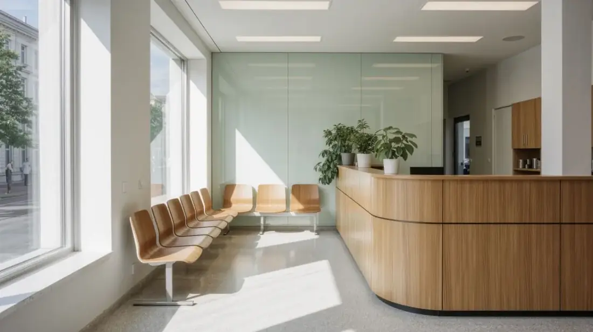
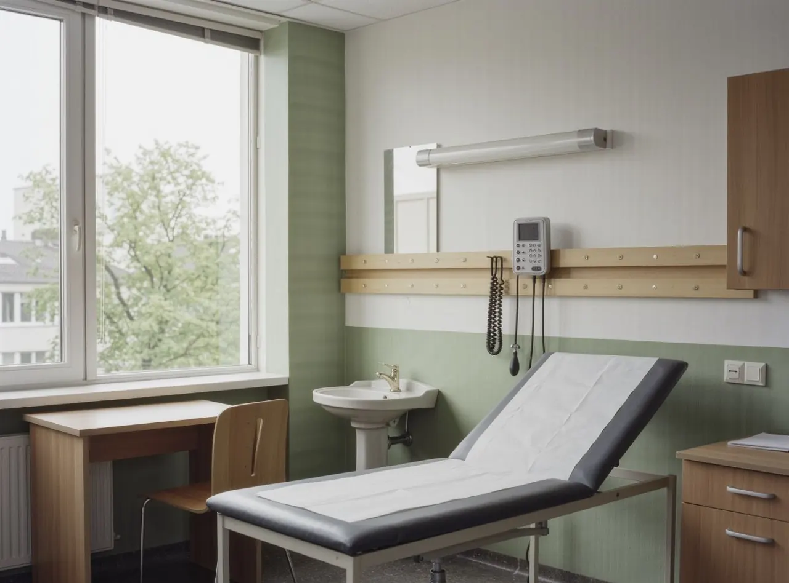

Hausarztpraxis · Landsberg am Lech
Hausärztliche Versorgung, in Ruhe.
Allgemeinmedizin für die ganze Familie. Wir nehmen weiterhin neue Patientinnen und Patienten auf.
Leistungen
Was wir anbieten
Von der akuten Erkrankung über die Vorsorge bis zur Begleitung chronischer Krankheiten.
Akutsprechstunde
Bei plötzlichen Beschwerden: Halsschmerzen, Fieber, Infekte. Bitte morgens anrufen.
Vorsorge & Check-up
Gesundheits-Check, Hautkrebsscreening und Krebsvorsorge im Rahmen der Kassenleistung.
Chronische Erkrankungen
Begleitung bei Bluthochdruck, Diabetes und weiteren Dauerdiagnosen, mit festen Kontrollterminen.
Impfungen
Standardimpfungen, Auffrischungen und Reiseberatung. Impfpass bitte mitbringen.
Labor & Diagnostik
Blutabnahme, EKG, Langzeitblutdruck und Lungenfunktion direkt in der Praxis.
Videosprechstunde
Für Befundbesprechung und Folgerezepte, wenn ein Besuch nicht nötig ist.
Sprechzeiten
Wann wir da sind
- Montag08:00 – 12:00 · 15:00 – 17:00
- Dienstag08:00 – 12:00 · 15:00 – 18:00
- Mittwoch08:00 – 12:00
- Donnerstag08:00 – 12:00 · 15:00 – 18:00
- Freitag08:00 – 13:00
- Samstag und Sonntaggeschlossen
Bitte bringen Sie zu jedem Quartalsbeginn Ihre Versichertenkarte mit. Rezepte bestellen Sie telefonisch bis 11 Uhr, Abholung am nächsten Werktag.

Unser Team
Wer Sie behandelt
Dr. med. Katrin Vogl führt die Praxis seit 2014. Gemeinsam mit drei medizinischen Fachangestellten betreuen wir rund 1.800 Patientinnen und Patienten aus Landsberg und den umliegenden Gemeinden.
Uns ist wichtig, dass Sie verstehen, worum es geht. Deshalb nehmen wir uns Zeit für Erklärungen und sagen auch, wenn etwas nicht nötig ist.
Fachärztin für Allgemeinmedizin · Zusatzbezeichnung Naturheilverfahren · Mitglied der Bayerischen Landesärztekammer
Im Notfall
Wenn die Praxis geschlossen ist
Bitte merken Sie sich diese Nummern
- Lebensgefahr, Notarzt
- 112
- Ärztlicher Bereitschaftsdienst
- 116 117
- Giftnotruf München
- 089 19240
- Vertretung im Urlaub
- Praxis Dr. Hofmann, 08191 987 65 43
Bei Verdacht auf Herzinfarkt oder Schlaganfall wählen Sie bitte sofort die 112 und warten Sie nicht auf einen Rückruf der Praxis.
Termin
Termin anfragen
Für akute Beschwerden rufen Sie bitte an. Alles andere können Sie hier anfragen, wir melden uns zurück.
- Telefon
- 08191 123 45 67
- Telefonzeiten
- Montag bis Freitag, 08:00 – 11:30
- Adresse
- Parkstraße 6
86899 Landsberg am Lech - Parken
- Parkplätze hinter dem Haus, Tiefgarage Stadtpark in 2 Minuten
- Barrierefrei
- Ebenerdiger Zugang, Aufzug, barrierefreies WC
- Bus
- Linie 2 und 4, Haltestelle Stadtpark